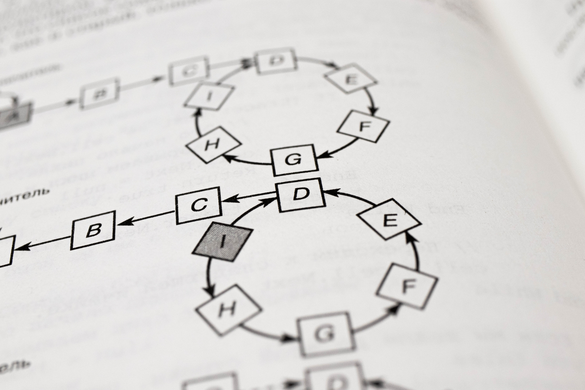

About Computational Thinking

Computational thinking is a problem-solving technique that entails understanding the problem and generating potential solutions to complex problems. Furthermore, Voogt (2015) mentioned that "Computational Thinking is defined as the process of recognising computational aspects in our surroundings and applying tools and techniques from Computer Science to understand and reason about both natural and artificial systems and processes."
Moreover, computational thinking involves five processes.
- Decomposition - Breaking down complex processes and problems into smaller components so that they can be described, understood, and implemented more effectively.
- Pattern recognition - Observing or trying to identify commonalities or differences that may lead to forecasts or shortcuts.
- Abstraction - Concentrating on only the most important information while forgetting or avoiding irrelevant information.
- Generalization - Recognizing common elements in multiple problems and adapting one model or solution to the other, as well as identifying shared characteristics.
- Algorithm design - A set of steps for solving a specific problem that uses an algorithm to describe the solution.
- 
For instance, consider an everyday task, such as making tea, which seems a simple and common task. However, it involves many simple steps. First of all, to make tea, tea leaves and hot water are needed. A kettle and a cup are also required. To prepare the hot water, water must then be put in the kettle and put on the fire. When the water boils, the fire is turned off, and the tea leaves are placed in it and poured into a cup. Finally, it can be drunk. Therefore, there are actually many steps involved in such a routine act, and if one step is missed or in the wrong order, the act may not be completed.
Furthermore, this computational thinking is closely related to logical thinking and could lead to an improvement in my logical thinking. It is also useful for any module that I will be taking in the future, and it is necessary to develop logical thinking in programming in order to learn programming (Sukamto 2018). Also, it should also be a valuable skill in the workplace after graduation, even if I work in a variety of industries and not only in the IT field. For example, when explaining work to colleagues at work, it is essential to give a structured explanation, and logical thinking is utilised in this process. Thus, computational and logical thinking is helpful and beneficial in all situations.